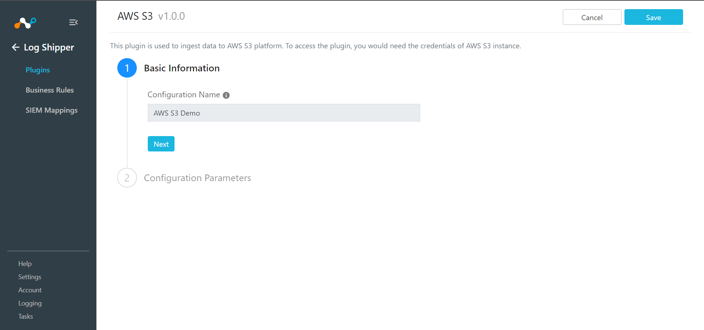
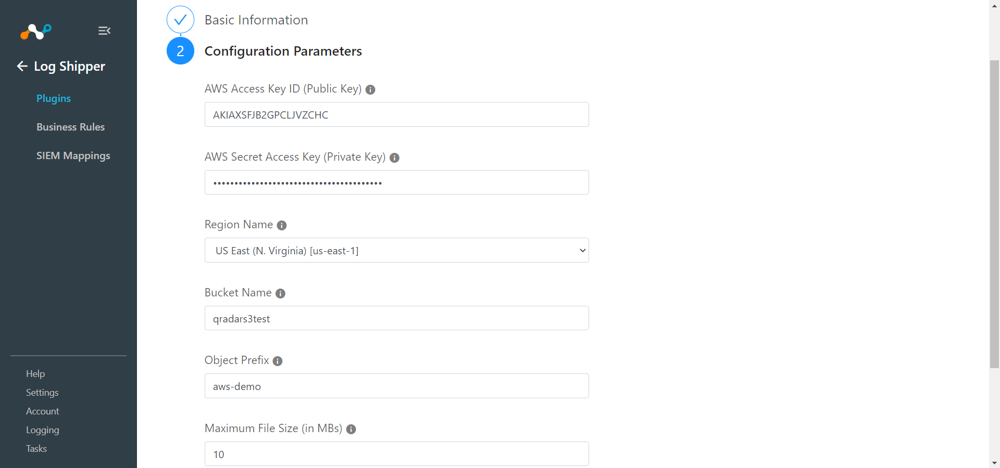
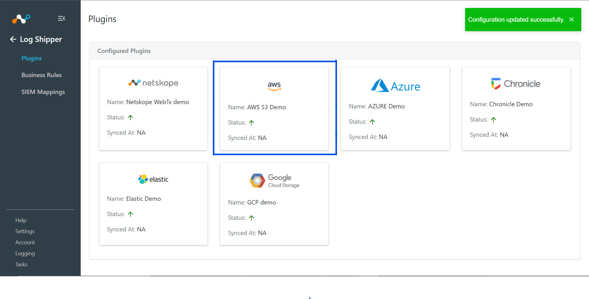
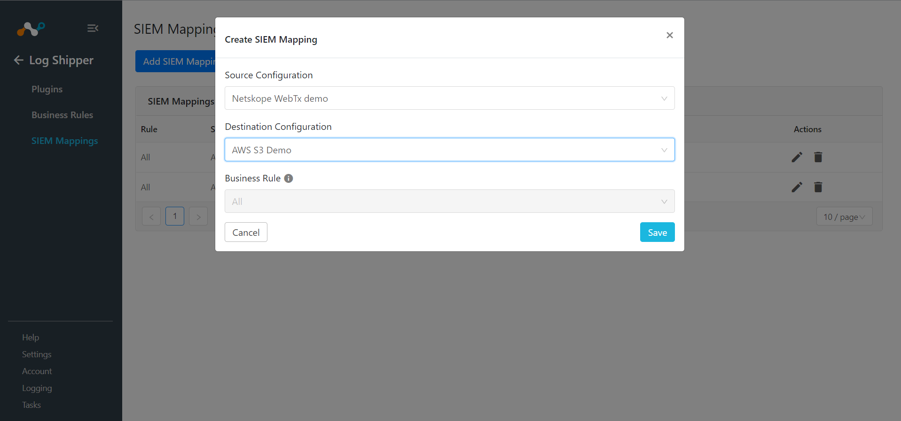
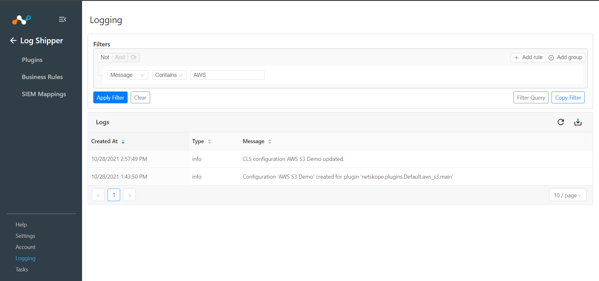

AWS S3 Plugin for Log Shipper
This document explains how to configure your AWS S3 integration with the Log Shipper module of the Netskope Cloud Exchange platform. This integration allows pushing web transactions into AWS S3 buckets.
A Netskope Tenant (or multiple, for example, production and development/test instances).
A Netskope Cloud Exchange tenant with the Log Shipper module already configured.
AWS S3 credentials with create/read/write buckets permissions. Obtain your AWS S3 Access key ID and Secret Access Key with permission to read/write on specific buckets or permission to create buckets before proceeding.
Configure the AWS S3 plugin.
Configure Log Shipper Business Rules.
Configure Log Shipper SIEM mappings.
Validate the plugin.
Go to Settings > Plugins.
Select the AWS S3 box to open the plugin creation dialog.
Enter a Configuration Name.
Click Next.
 Enter your AWS Access Key ID, AWS Secret Access Key, and select a Region Name. Enter a Bucket Name, Object Prefix, Maximum File Size, and Maximum Duration.
 Object Prefix: Will be added to the Object key name while ingesting web transactions to the AWS S3 bucket.)
Maximum File Size and Maximum Duration: Whichever hits first, data will be exported according to that.)
Click Save.

Go to Log Shipper > Business Rules.

Click Create New Rule.

Enter a Rule Name and select the filters to use.
Click Save.

Go to Log Shipper > SIEM Mappings and click Add SIEM Mapping.
Select a Source Configuration, Business Rule, and Destination Configuration.
 Click Save.
To validate the plugin workflow, you can check from Netskope Cloud Exchange and from AWS CLI.
To validate from Netskope Cloud Exchange,
Go to Logging.

To validate from the AWS CLI.
Install AWS CLI in your machine.
(Reference: https://docs.aws.amazon.com/cli/latest/userguide/install-cliv2.html)
Configure AWS CLI in your machine.
(Reference: https://docs.aws.amazon.com/cli/latest/userguide/cli-configure-quickstart.html)
Use these commands to view buckets and objects.
To list all the buckets.
aws s3 ls
To list all the objects in a bucket.
aws s3 ls s3://<bucket_name>To download an object from a bucket to a local machine.
aws s3 cp s3://<bucket_name>/<object_path> <local_path>